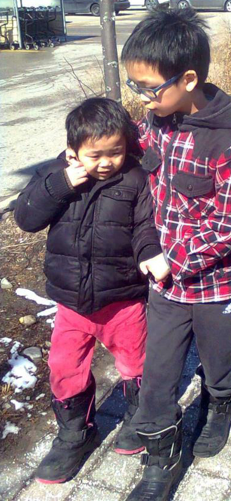

Even Through the Fires of Life, you still Persist: no matter what, you continue on. life is so cruel. life is so hard. life is so unknowable and incomphrensible. yet you still stand. you're still here. you're still persisting. when life deals you such an awful hand, but you still play. this trait belongs to only one person.

i'm sorry, ivan.
i know i can not speak on the behalf of the world, nor life. but, let me be its messenger. i'm sorry for the life that you could not have the chance to grasp. it sometimes feels like a cruel twist of fate. endlessly, i wonder what your life would look like if otherwise. i remember in elementary school, i took $100 from our father's wallet to donate to the autism awareness fundraiser at school, believing it could 'fix' you. how naive i was, right?
i wish i could have been more for you. all those days spent on what were ultimately meaningless tasks are now filled with regret looking back. because i could have been looking after you better. because i could have been more to you. you deserved so much better, and you still deserve better now. i want that reality to materialize some day, even if i don't know how. even if it feels impossible. you deserve to be happy.
i wish i could convey these words to you, but they would have no meaning. just foreign hopes that you could not be expected to understand. but still. still, someday i want there to be a day where i can tell you how proud i am of you. i fear that day won't come, but i have to try. for you, i have to.
thank you for enduring it all. enduring life, enduring me, enduring the now. you deserve the world, and so much more. we are worlds apart: we could not begin to understand eachother. but still, i hope you can understand how much i love you. you're the strongest out of all of us.
love, your older brother